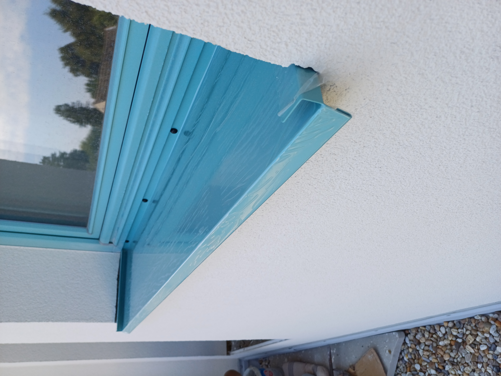
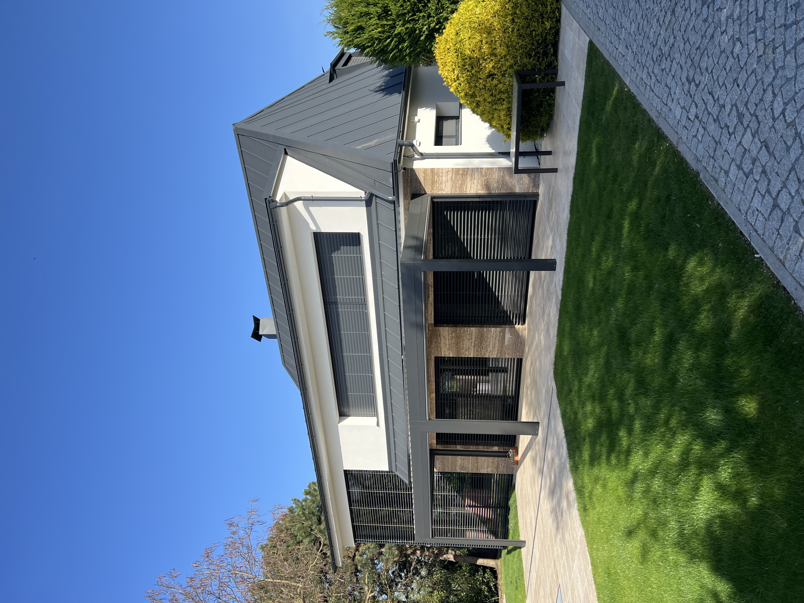
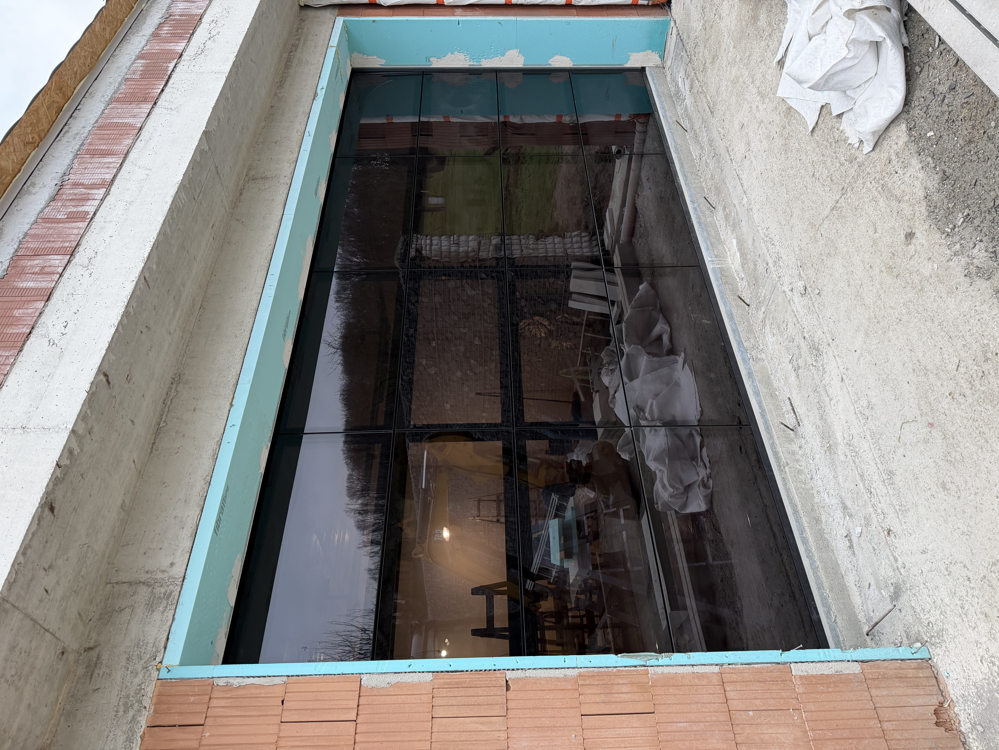

Produktové řady
Venkovní žaluzie
Screeny
Venkovní rolety
Sítě proti hmyzu

Parapety

Bioklimatické pergoly

Garážová vrata
Kontaktujte nás
Sídlo společnosti
Žaluzie PRO s.r.o.
Šumperská 529
783 91 Uničov
IČO: 22626298
E-mail pro poptávky: info@zaluziepro.cz